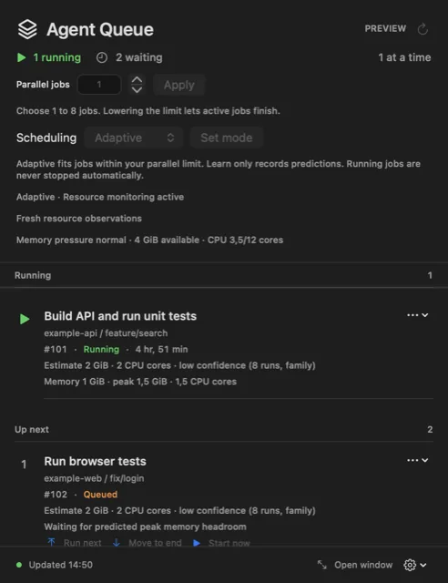

Adaptive scheduling
The queue measures the machine and each job, and can delay a job when its predicted demand does not fit current headroom. Fixed scheduling is the default, Learn only records predictions, and Adaptive turns on resource-based admission.
Changing mode never stops a running job.
